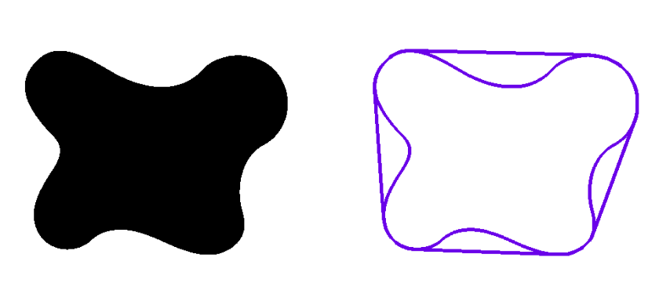

Enveloppe Convexe
Le convex hull (ou enveloppe convexe) est un concept géométrique qui permet de déterminer la plus petite forme convexe englobant un ensemble de points. Une forme est dite convexe lorsque, pour deux points quelconques situés à l’intérieur, le segment qui les relie reste entièrement à l’intérieur de la forme.
De manière intuitive, on peut comparer le convex hull à un élastique tendu autour d’un objet. Si l’on place un élastique autour de tous les points d’un contour et qu’on le relâche, l’élastique épouse uniquement les points les plus extérieurs et ignore les creux internes. La forme obtenue correspond alors à l’enveloppe convexe.
Dans le traitement d’image et la vision par ordinateur, le convex hull est utilisé pour simplifier et régulariser la forme des objets détectés. À partir d’un contour parfois irrégulier ou bruité, l’enveloppe convexe fournit une approximation plus lisse et plus robuste de la forme globale de l’objet.
Avec OpenCV, le convex hull est calculé à partir des points d’un contour détecté. Il permet notamment de comparer la forme réelle d’un objet à sa version convexe, de mesurer des défauts de concavité, ou encore d’améliorer la détection et l’analyse d’objets dans une image.
Avant après la création d'une enveloppe convexe avec convexHull()
Algorithme Manuel Transformé de Hough linéaire en Python
import cv2 as cv
import numpy as np
import argparse
import random as rng
import matplotlib.pyplot as plt
src = cv.imread('blob.png', cv.IMREAD_GRAYSCALE)
if src is None:
print("Erreur : Image non chargée. Vérifie le chemin du fichier.")
exit()
hist = cv.calcHist([src], [0], None, [256], [0, 256]) #calcul l'histo
#si on veut égaliser l'intensité de la photo
dst = cv.equalizeHist(src)
hist_equalized = cv.calcHist([dst], [0], None, [256], [0, 256])
_, thresh = cv.threshold(src, 70, 255, cv.THRESH_BINARY + cv.THRESH_OTSU) # on binarise l'image
plt.imshow(thresh, cmap = 'gray')
plt.axis('off') # Hide axes
plt.show()
gray = cv.GaussianBlur(thresh, (9, 9), 0)
# Detect edges
canny_output = cv.Canny(gray, 40, 90)
kernel = cv.getStructuringElement(cv.MORPH_RECT, (3, 3))
closed = cv.morphologyEx(canny_output, cv.MORPH_CLOSE, kernel)
# pour enlever les défaut un avoir des contours smooth
copy = closed.copy()
plt.imshow(closed, cmap = 'gray')
plt.axis('off') # Hide axes
plt.show()
# Find contours
contours, _ = cv.findContours(copy, cv.RETR_EXTERNAL, cv.CHAIN_APPROX_NONE) # trouve les contours
# Find the convex hull object for each contour
hull_list = []
for i in range(len(contours)):
hull = cv.convexHull(contours[i]) # juste cette ligne suffit
hull_list.append(hull)
# Draw contours + hull results
drawing = np.zeros((canny_output.shape[0], canny_output.shape[1], 3), dtype=np.uint8)
for i in range(len(contours)):
color = (rng.randint(0,256), rng.randint(0,256), rng.randint(0,256))
cv.drawContours(drawing, contours, i, color)
cv.drawContours(drawing, hull_list, i, color)
plt.imshow(drawing)
plt.axis('off') # Hide axes
plt.show()